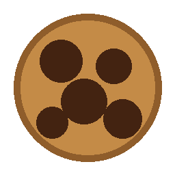
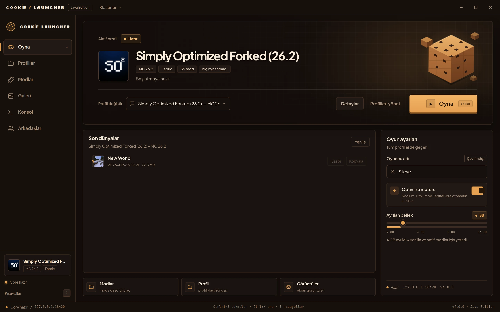
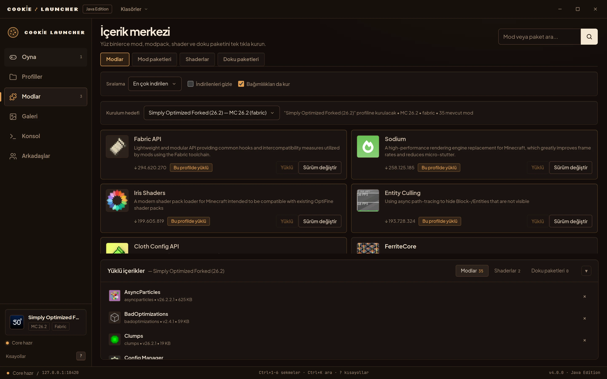
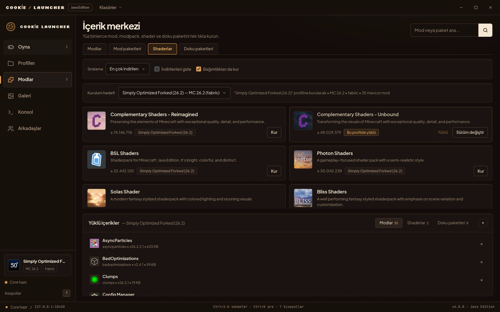
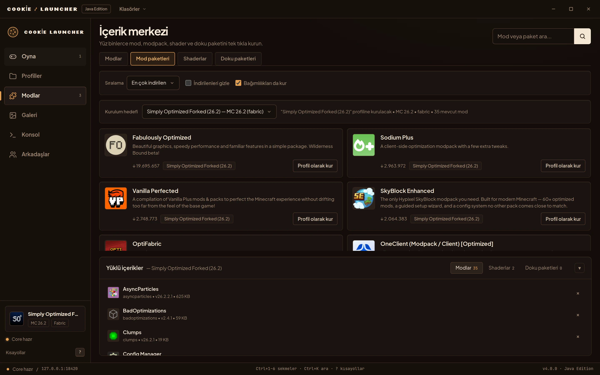

900+
resmi Java sürümü; her biri tek tıkla kurulur.

Cookie Launcher İndirCookie Launcher, 900+ resmi Minecraft Java sürümü, Modrinth modları ve arkadaşlar için ücretsiz bir başlatıcı.
Oyunun etrafındaki her şey, tek pencerede.




Mojang'ın tüm resmi Java sürümleri.
Mod, shader ve paket; bağımlılıklarıyla.
Aynı profile, tek tıkla.
Her dünya kendi sürümüyle.
Kendi profili ve modlarıyla.
Noise_XX ile uçtan uca şifreli davetler.
Modrinth'te ara: 900+ sürüm, modlar ve shaderlar; hepsi aynı pencerede.
aranıyor…
900+
resmi Java sürümü; her biri tek tıkla kurulur.
5
Vanilla, Fabric, Forge, NeoForge, Quilt.
0
Reklam, telemetri ve hesap yok.
Kurulum, macOS, telemetri, sürümler ve arkadaşlar.
Hayır. Windows kurulumu çekirdeği içinde getirir; Python kurmadan Oyna’ya basabilirsin. Java’yı da başlatıcı kendisi indirir.
DMG imzasız ve deneysel. macOS ilk açılışta Sistem Ayarları > Gizlilik ve Güvenlik üzerinden izin isteyebilir.
Reklam ve telemetri yok. Mojang girişi dışında bir hesap istemez.
900’den fazla resmi Java sürümü ve beş çalıştırma yolu: Vanilla, Fabric, Forge, NeoForge, Quilt.
Dünyayı paylaş, CL1 kodunu gönder. Önce doğrudan P2P denenir; gerekirse Noise_XX ile şifreli relay kullanılır.